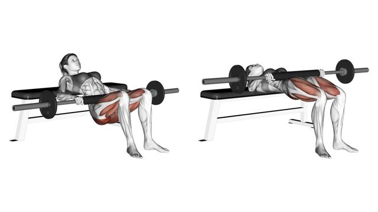
01Glúteo mayor
Hip thrust con barra
Espalda alta en el banco, mentón recogido. Aprieta glúteo arriba 1 s.
Series4
Reps10–12
Descanso90 s
Fortalece glúteos y la musculatura que sostiene la zona lumbar, con trabajo de cuerpo completo para mantener el equilibrio, más un día extra de tren superior. Sesiones de 45–60 min, mejor en días no consecutivos.

Espalda alta en el banco, mentón recogido. Aprieta glúteo arriba 1 s.
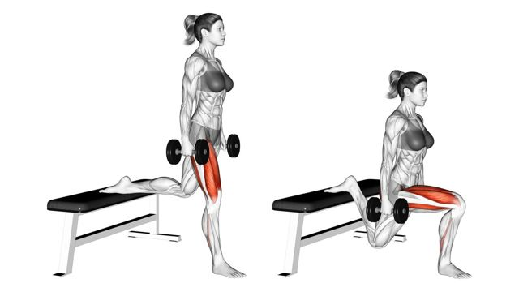
Pie trasero en el banco. Torso algo inclinado para cargar más glúteo.
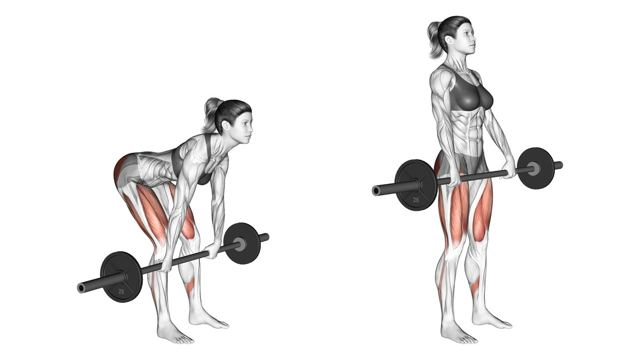
Cadera atrás, barra pegada a las piernas, espalda neutra.
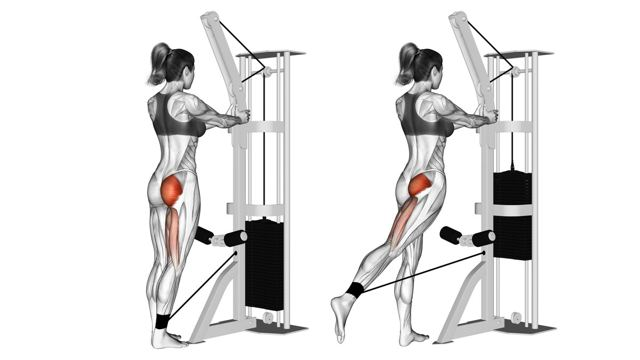
Sin arquear la lumbar. Lleva la pierna atrás, no arriba.
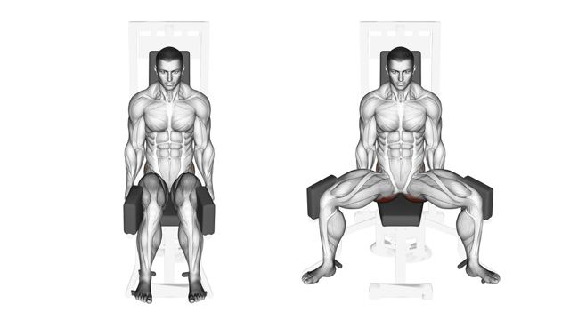
Máquina o banda. Torso un poco adelantado y abre controlado.
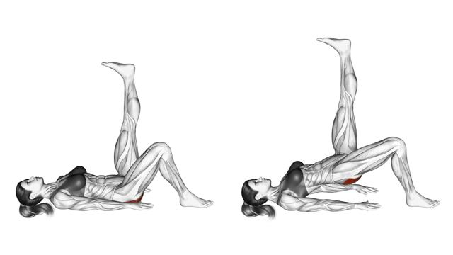
Pelvis nivelada, empuja con el talón.
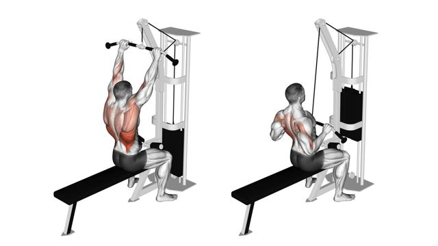
Polea o asistido. Pecho arriba, baja hacia la clavícula.
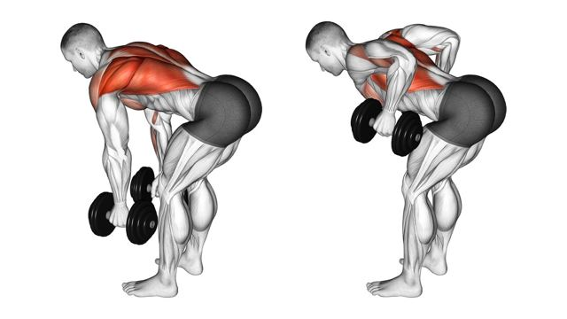
Mano y rodilla en el banco, espalda plana. Codo hacia la cadera.
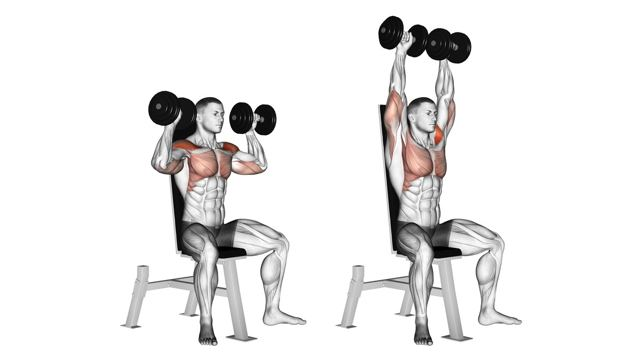
Sentada, sin arquear la lumbar.
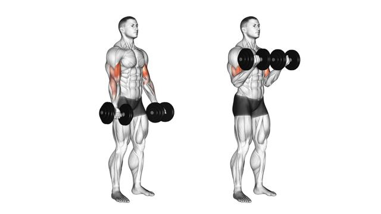
Barra o mancuernas. Codos fijos, sin balanceo.
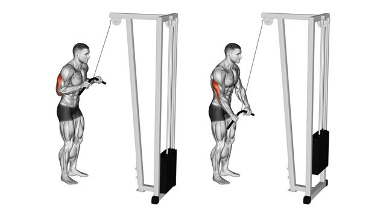
Codos pegados al cuerpo, extiende del todo.
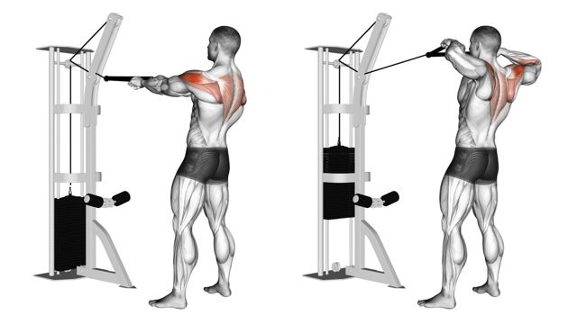
Tira hacia la cara abriendo los codos, aprieta escápulas.

Cuerpo recto, glúteo y abdomen activos.
Día clave para fortalecer los erectores espinales y el core profundo, los músculos que estabilizan la zona lumbar.
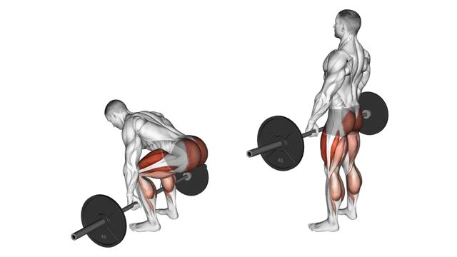
Barra pegada al cuerpo, espalda neutra. Empuja el suelo con las piernas.
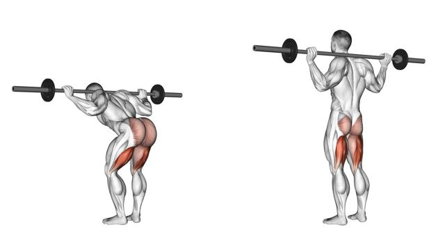
Peso ligero. Rodillas algo flexionadas, bisagra de cadera.
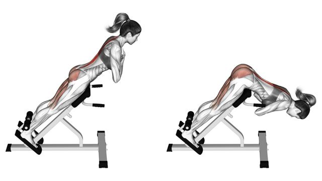
En banco lumbar. Sube hasta alinear el cuerpo, sin hiperextender.
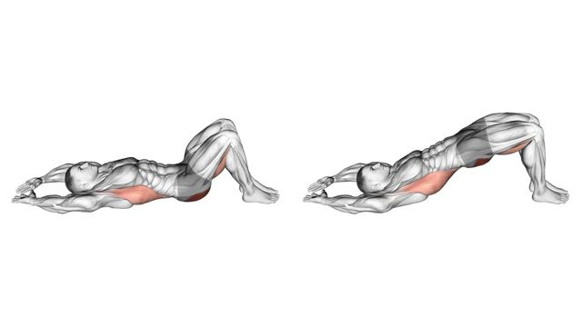
Desde el suelo, barra sobre la cadera con almohadilla.
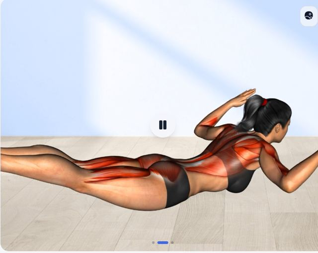
Boca abajo, eleva brazos y piernas a la vez. Isométrico o dinámico.
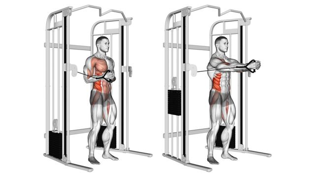
De lado a la polea. Extiende los brazos sin dejar que el tronco gire.
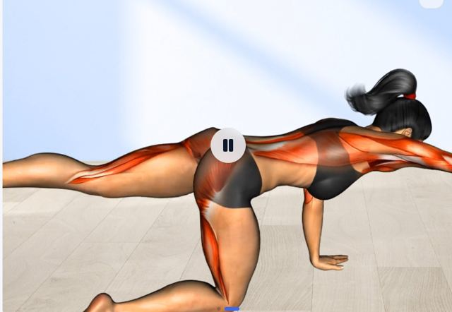
A cuatro patas, brazo y pierna contrarios. Espalda quieta.
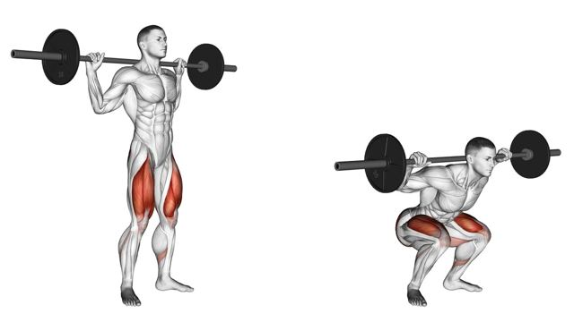
Pecho arriba, rodillas en la línea de los pies.
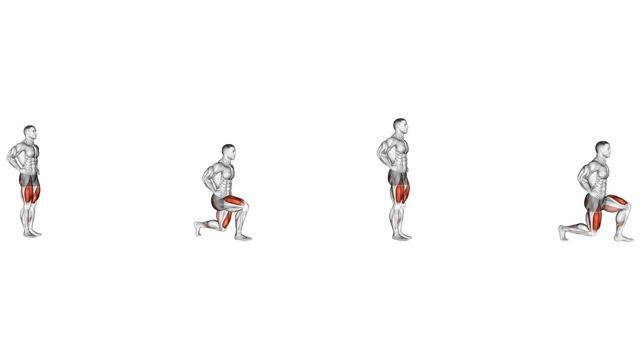
Paso largo, rodilla trasera cerca del suelo.
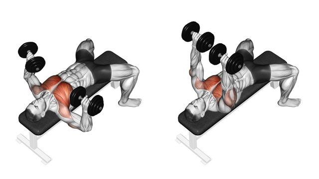
Escápulas juntas, pies firmes en el suelo.
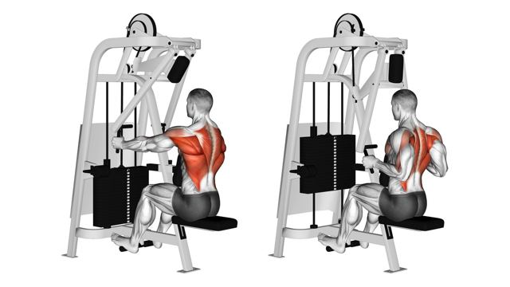
Pecho apoyado, tira con los codos.
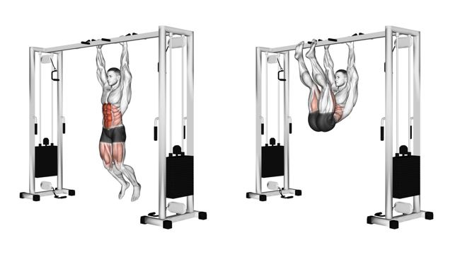
Colgado o tumbado. Sube controlado, sin balanceo.

Enrolla el tronco, la cadera no se mueve.
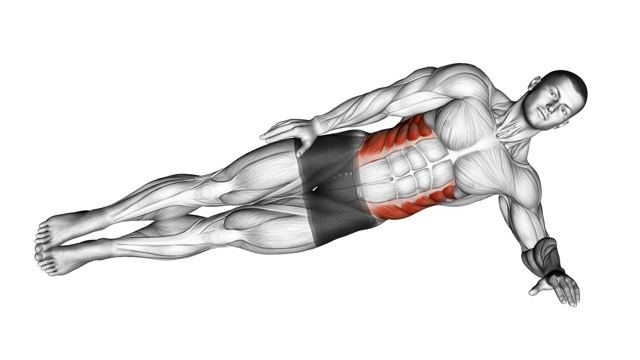
Cadera alta, cuerpo en línea.
Calentamiento: 5–10 min de movilidad de hombros y 1–2 series ligeras de press banca.
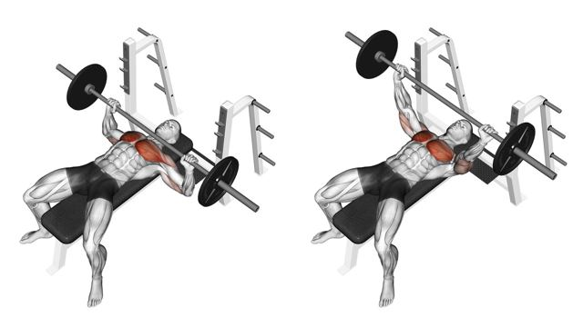
Mancuernas o barra. Escápulas juntas y pies firmes.
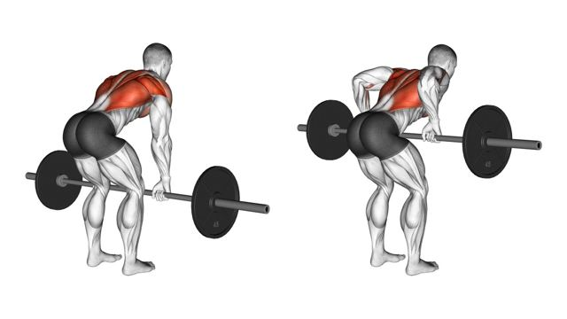
Torso inclinado a ~45°, espalda neutra. Tira hacia el ombligo.

Sentada, sin arquear la lumbar. Sube hasta casi bloquear.

Pecho arriba, baja la barra hacia la clavícula.
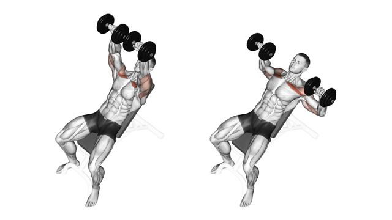
Banco a 30–45°. Baja controlado hasta la altura del pecho.
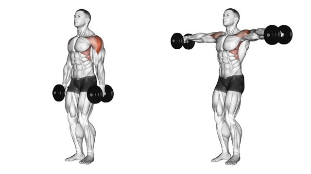
Codos ligeramente flexionados. Sube solo hasta la línea del hombro.

Codos pegados al cuerpo, sin balancear.

Codos fijos a los lados. Extiende del todo abajo.
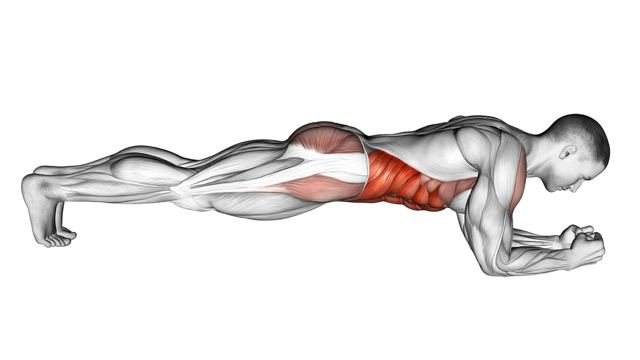
Cuerpo recto de cabeza a talones, glúteo y abdomen activos.
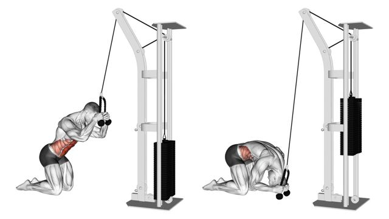
De rodillas. Enrolla el tronco, la cadera no se mueve.